Extractive only
Every sentence on screen exists in a source book. There is no generated text, so there is nothing to hallucinate. Each result shows the book, author, page and a link into the PDF.
Open-Source Institutional Scholar Search
OSISS is an offline search engine for your institution's PDFs. Ask in Bengali, Hindi or English and it returns sentences taken word for word from the books, with a link to the page. It never writes an answer of its own, so it cannot invent one.
Best answer · Definition
“… The call stack (execution stack) is a data structure that controls the calling and return of functions.”
Introduction to Computer Science · OpenStax · Page 324 Open in PDF
Why OSISS
Every sentence on screen exists in a source book. There is no generated text, so there is nothing to hallucinate. Each result shows the book, author, page and a link into the PDF.
All models load from your own disk and no external API is called at query time. The internet is needed during setup only, to download packages and models.
Ask in Bengali or Hindi script, in romanized form (“goti kake bole?”), in English, or a mix. A question in one language can match a book in another, though that is still the weakest area.
Search needs no account. With one, scholars can go further:
A desktop app controls the server, so nobody has to live in a terminal:
How a search works
Two searches run side by side: one by meaning (BGE-M3 embeddings) and one by keywords. Their results are fused.
A cross-encoder reads the question with each passage and orders them. Near-duplicates are dropped and pages are diversified.
A question-answering model marks the exact span that answers the question, and the sentence around it is kept.
You get the quote with its paragraph, the book, the page and a link to open the PDF at that page.
These questions were written by the authors, so the 96% is optimistic and real questions will score lower. Cross-language questions are the weakest area. Read the limits.
See it
Screenshots from a demo install. The name shown in the corner is a sample account.
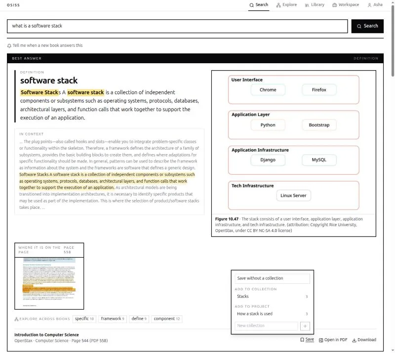
Search. The definition is highlighted in context, with the figure from the page, the source and a Save menu.
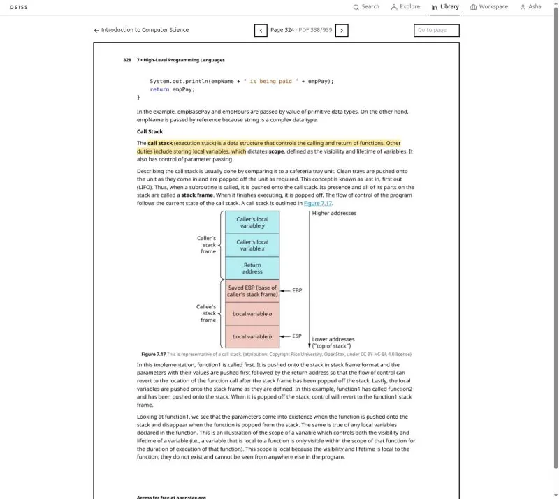
Reader. Open the page itself, with the matched sentence highlighted. Select text to save your own highlights.
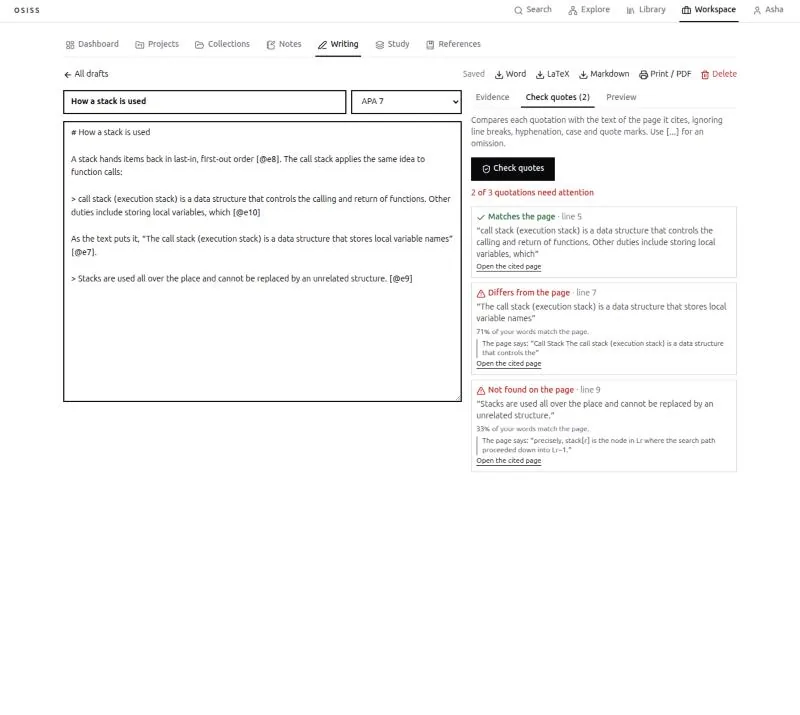
Quote check. Each quotation in a draft is compared with the page it cites: matches, differs, or not found.
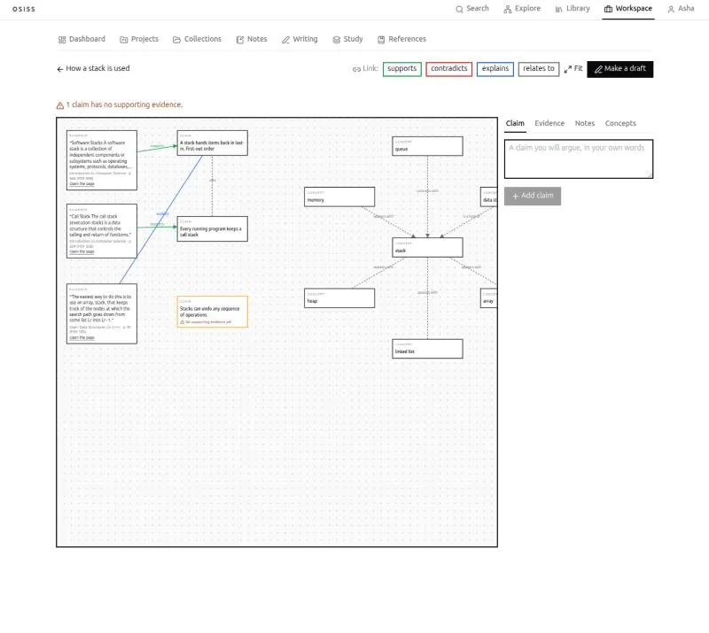
Board. Lay out claims and supporting evidence, then turn the board into an outline.
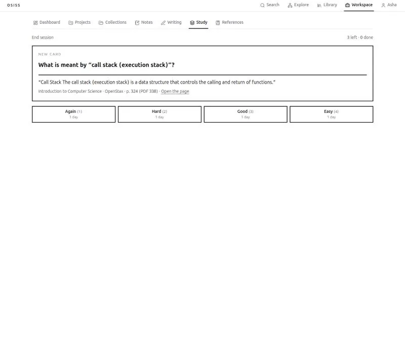
Study. Flashcards from saved quotes, scheduled with spaced repetition.
Install
The admin app is the control panel for everything after the first setup command. Follow the steps in order. The full guide is section 11 of the README.
Download the installer for the computer you will administer from.
The first installer release is not published yet. Until it is, build the app from source as shown below.
git clone https://github.com/midyadebangshu-spec/OSISS.git
cd OSISS/admin
npm install
npm run dist # Linux: release/OSISS Admin-1.0.1.AppImage and a .debDebian and Ubuntu: sudo apt install ./release/osiss-admin_1.0.1_amd64.deb, then start OSISS Admin from the applications menu. Other Linux: make the AppImage executable and run it. On Windows or macOS use npm run dist:win or npm run dist:mac on that system.
The app runs on Windows, macOS and Linux, but the OSISS server runs on Ubuntu or macOS only. On Windows the app manages a server on another computer (see step 4). The Windows and macOS installers are built automatically and have not been tested by hand. The installer contains no server address or secret.
Open the app and click Create my passkey. It shows a random 6-character passkey once. Write it down, type it back and click Confirm and continue. The app asks for it every time it opens and after 15 minutes idle.
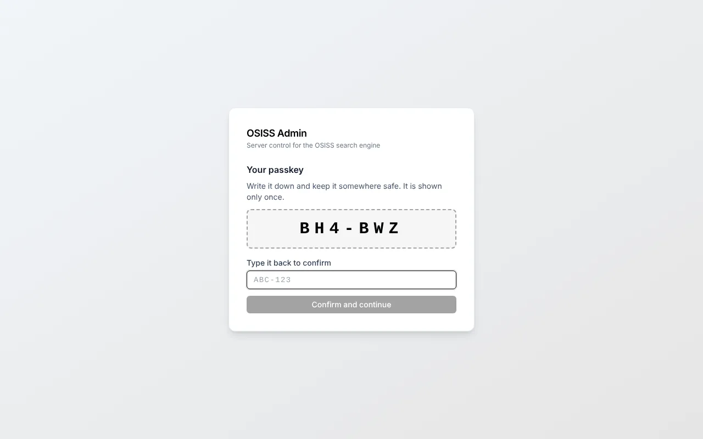
The admin app controls an OSISS server but does not install it, so run this once on the computer that will host OSISS. setup.sh sets up Python, Docker, the database, the models and an ADMIN_TOKEN that the app uses to connect.
Ubuntu, as a user who may use sudo
sudo apt-get update
sudo apt-get install -y git curl python3 python3-venv python3-pip \
tesseract-ocr tesseract-ocr-eng tesseract-ocr-ben tesseract-ocr-hin wamerican
# Docker Engine with the Compose plugin
curl -fsSL https://get.docker.com | sudo sh
sudo usermod -aG docker "$USER" # then log out and back in
# Node.js 22
curl -fsSL https://deb.nodesource.com/setup_22.x | sudo -E bash -
sudo apt-get install -y nodejs
git clone https://github.com/midyadebangshu-spec/OSISS.git
cd OSISS
./setup.shWith an NVIDIA GPU, also run sudo ubuntu-drivers install, reboot, and check that nvidia-smi lists the card.
macOS, with Homebrew and Docker Desktop (start it first)
brew install git python node tesseract tesseract-lang
git clone https://github.com/midyadebangshu-spec/OSISS.git
cd OSISS
./setup.shMacs have no CUDA, so models run on the CPU: search works but is slower.
setup.sh is safe to run again. It downloads about 12 GB, so allow some time.
In Servers, fill in the form:
This computerhttp://localhost:8000Click Read token from .env, then Save & test connection. You should see “Connected: admin token accepted”.
On Windows, or managing a server elsewhere? Choose Elsewhere (a domain or another machine) instead, enter the server's URL (for example http://192.168.1.20:8000) and its ADMIN_TOKEN, then continue from step 5. The server keeps itself running there, so step 6 does not apply. Setup B has the details.
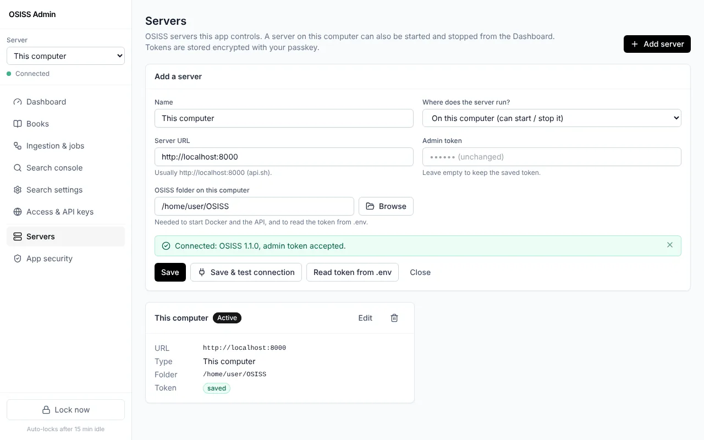
The Dashboard asks how this server should serve search. On one computer or a trusted campus network choose Open; choose Approved apps only when other apps should need an API key. You can change it later under Access & API keys.
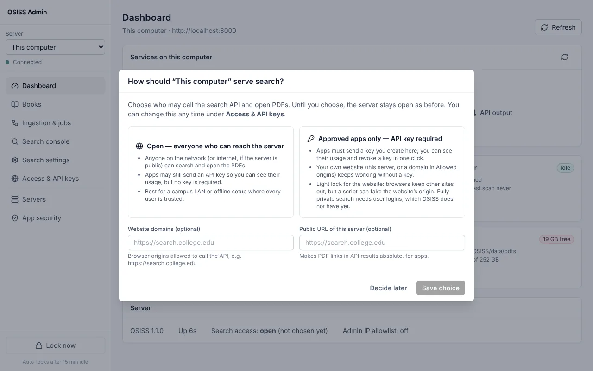
On the Dashboard, click Start for PostgreSQL + Elasticsearch, then Start API. The tiles below show each part; they should turn green once the models have loaded. API output shows the log if something fails.
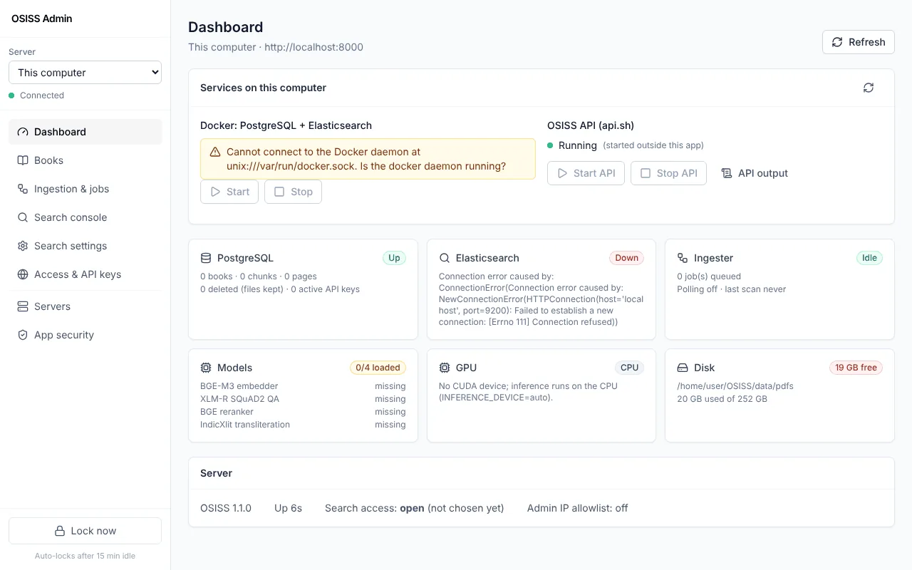
This screenshot comes from a demo server with no Docker, Elasticsearch or models, which is why some tiles are red. On a real install they are green.
Add PDFs from the Books page, or copy them into data/pdfs/. Then open Ingestion & jobs and click Scan now, or switch on PDF folder polling so new files are picked up automatically. Afterwards, fix the guessed titles on the Books page.
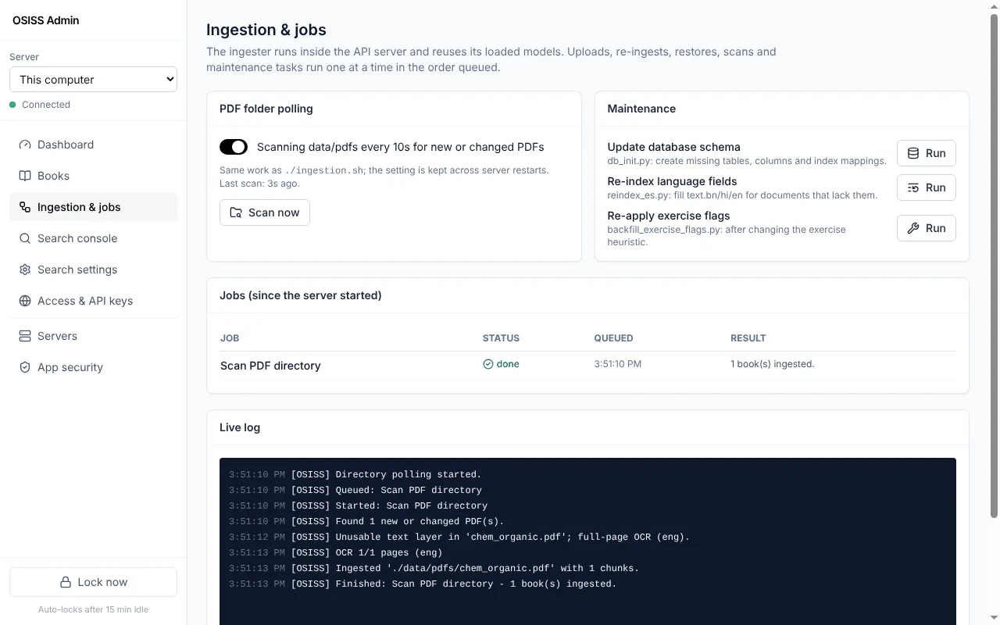
When the first ingestion has finished, refresh the English word list once (the one other terminal command) and restart the API from the Dashboard (Stop API, Start API). It helps OSISS tell English from romanized Bengali and Hindi.
.venv/bin/python src/build_english_vocab.pyOpen the Website page, click Build website, then Go live. The OSISS server now serves the website at http://localhost:8000. Open it and ask a question.
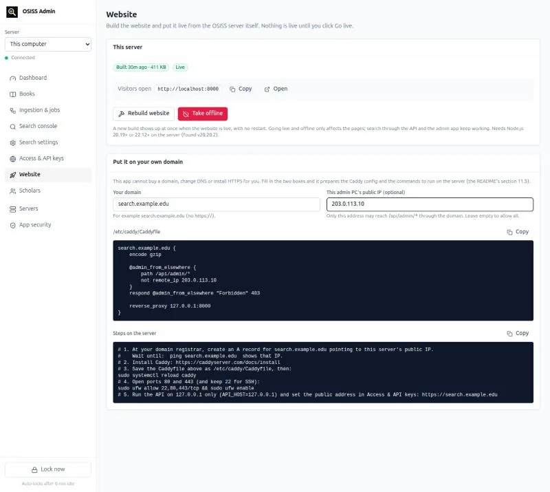
Building the website needs Node.js 20.19+ or 22.12+ on the server.
One server for everyone on the network, managed from an admin's own PC.
Read setup BA server with a public address and your own domain, with HTTPS through Caddy.
Read setup CHelp
The server has no ADMIN_TOKEN. Re-run ./setup.sh, or add ADMIN_TOKEN=<a long random value> to .env, restart the API and use Read token from .env again.
Too many wrong admin tokens came from your address. Wait 15 minutes, or correct the token under Servers.
Add your user to the docker group (sudo usermod -aG docker "$USER") and log out and back in.
setup.sh stops with “ERROR”A prerequisite is missing or too old (Node.js must be 20.19+ or 22.12+). Install it as shown in step 3 and run ./setup.sh again; it skips work that is already done.
Use Forgot the passkey? on the lock screen. It removes the saved servers from that computer and creates a new passkey. Nothing on the servers changes; add them again with their tokens.
Without an NVIDIA GPU the models run on the CPU, which takes many times longer per question. A 12 GB GPU answers in about 2–4 seconds.
More answers are in the troubleshooting section of the README.